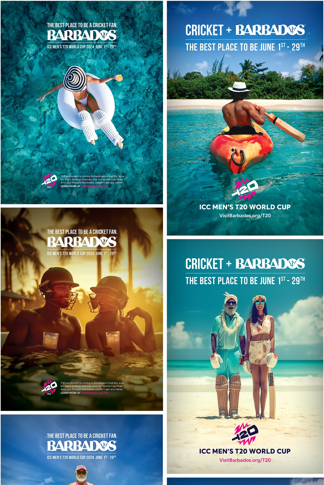
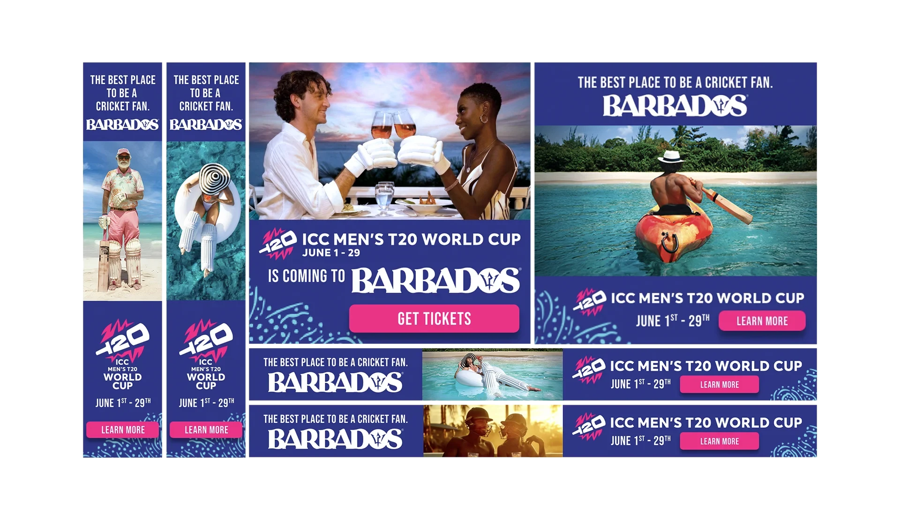
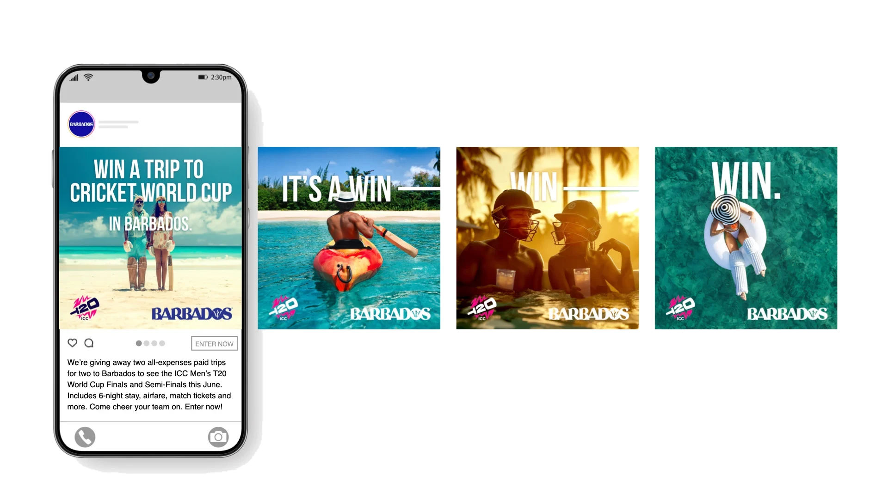
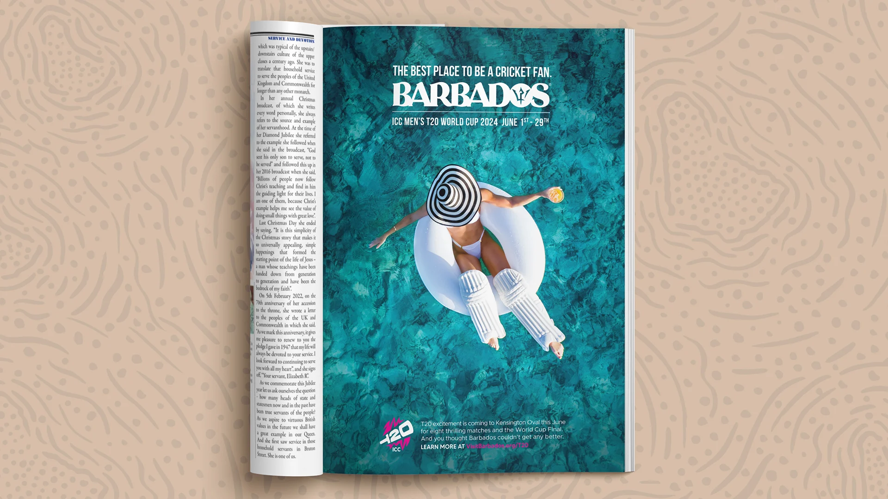

Cricket is one of the most watched sports in the world, and Barbados is one of its most desirable destinations.
When the ICC Men’s T20 World Cup came to Barbados, we positioned the tournament not just as a sporting event, but as a once-in-a-lifetime travel moment by fusing cricket iconography with the island’s unmistakable beauty.




Credits
Photographer: Kristopher Streek
- Chief Creative OfficerLiz Paradise
- Creative DirectorAdam LaRocca
- Creative DirectorJason Piroth
- Senior Art DirectorTJ Stacy
- AgencyBright Red (OMC)

Next project
No Barriers Reef
Belize Tourism Board